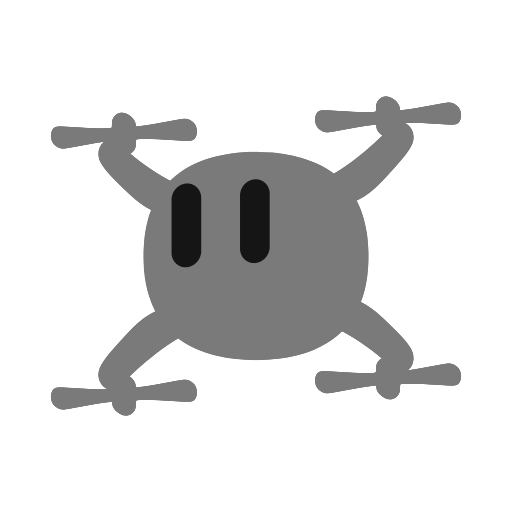

← Voltar ao site
Novo por aqui?
Acesso rápido e seguro
Na próxima vez, entre com Face ID ou digital deste aparelho, sem digitar a senha.


SADECRotas aéreas para o que não pode esperar.
© SADEC · protótipo acadêmico da FIAP Global Solution 2026. Nenhum acesso aqui é real.
Novo por aqui?
Na próxima vez, entre com Face ID ou digital deste aparelho, sem digitar a senha.